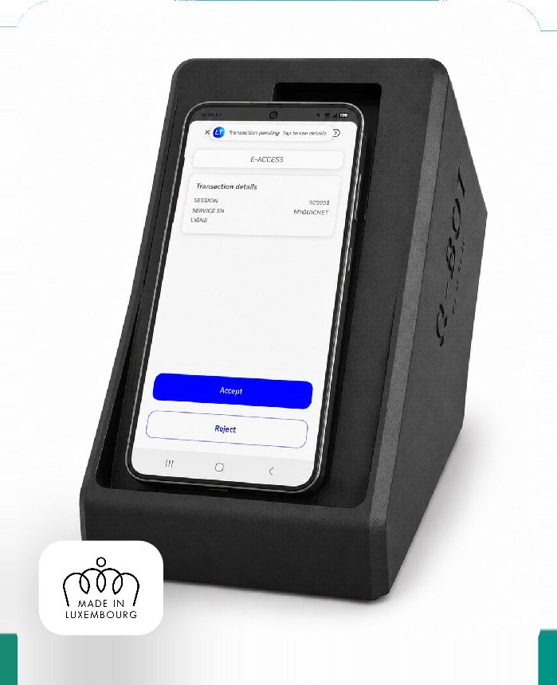
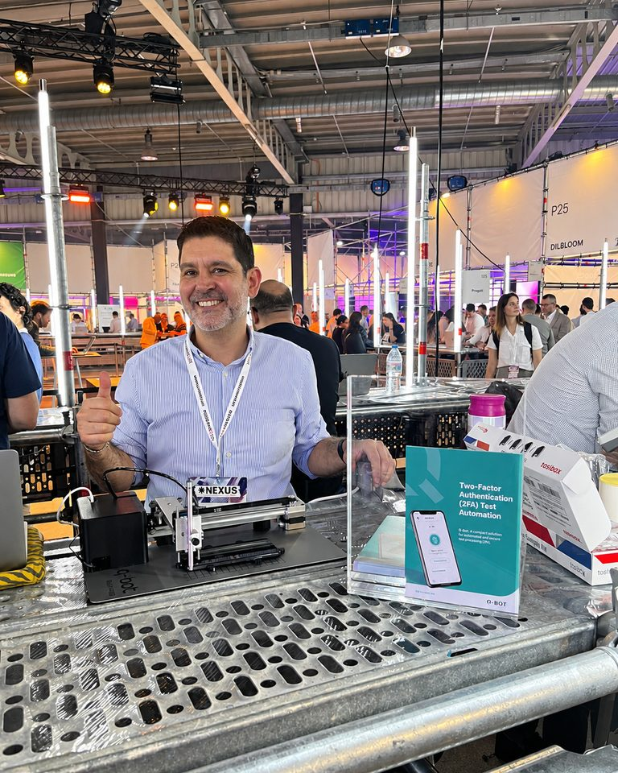
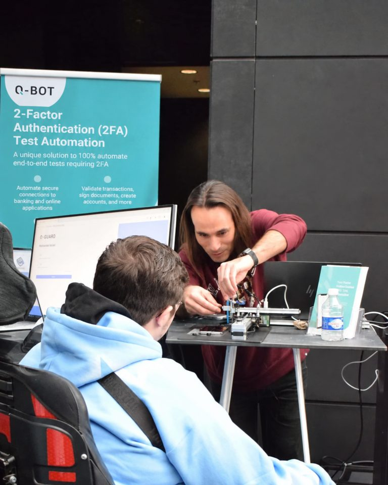
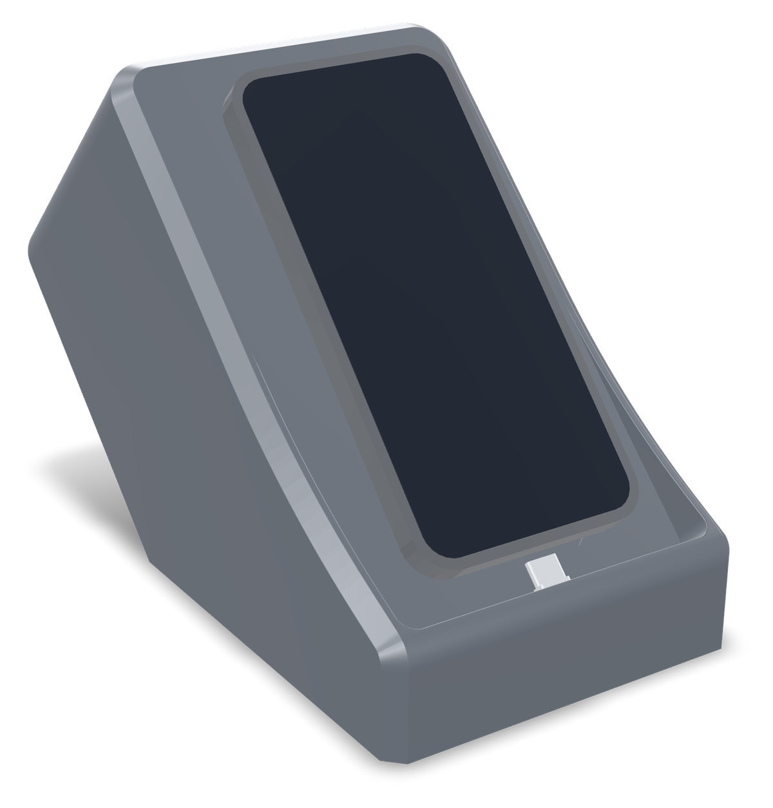

- Home
- Products
Feature
Products
Q-Leap is a software testing company. We built Q-Bot and Q-Guard to address needs we encountered in our work.
- Givenyour testing process has a challenge
- Whenyou explore Q-Bot and Q-Guard
- Thenyou can request a demo
Q-Leap / Q-Bot
Automate 2FA on a real phone.
Q-Bot operates two-factor authentication on a real Android smartphone when your test chain needs it. The test continues without human intervention.

How Q-Bot works
A real phone takes the next step.
Configure a scenario without code: capture the screen, place touch areas and set waiting times. Q-Bot replays it on the smartphone.
- The test reaches mobile authentication.
- An HTTP call triggers Q-Bot.
- Q-Bot operates the real 2FA app on the smartphone.
- The code, push or mobile interaction is validated.
- The test continues automatically.
Works with your test chain
Android 2FA apps include LuxTrust Mobile, Microsoft Authenticator, Google Authenticator and itsme. Trigger Q-Bot from Selenium, Cypress, Appium, Playwright, Robot Framework, Katalon, TestComplete, Jenkins CI, GitLab CI or another tool able to send an HTTP call.
Scenarios stay in the box on your network, with no data sent to an external service. Q-Bot is designed and made in Luxembourg by Q-Leap.
Ask for a demoQ-Bot in detail
See the device at work.




Q-Bot demonstration
Q-Leap / Q-Guard
Turn real journeys into test cases.
Q-Guard observes how people use a web application, identifies repeated journeys and helps create automated test cases without coding. It runs on your own servers.
Q-Guard exports
Use the scripts in your own tools.
Export automated test scripts for Selenium in Java, C#, Python or JavaScript, Robot Framework, and Playwright in TypeScript.
Q-Guard can execute test cases and report coverage, results and identified issues from its platform.